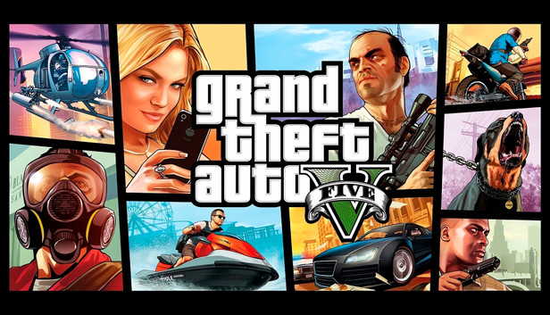
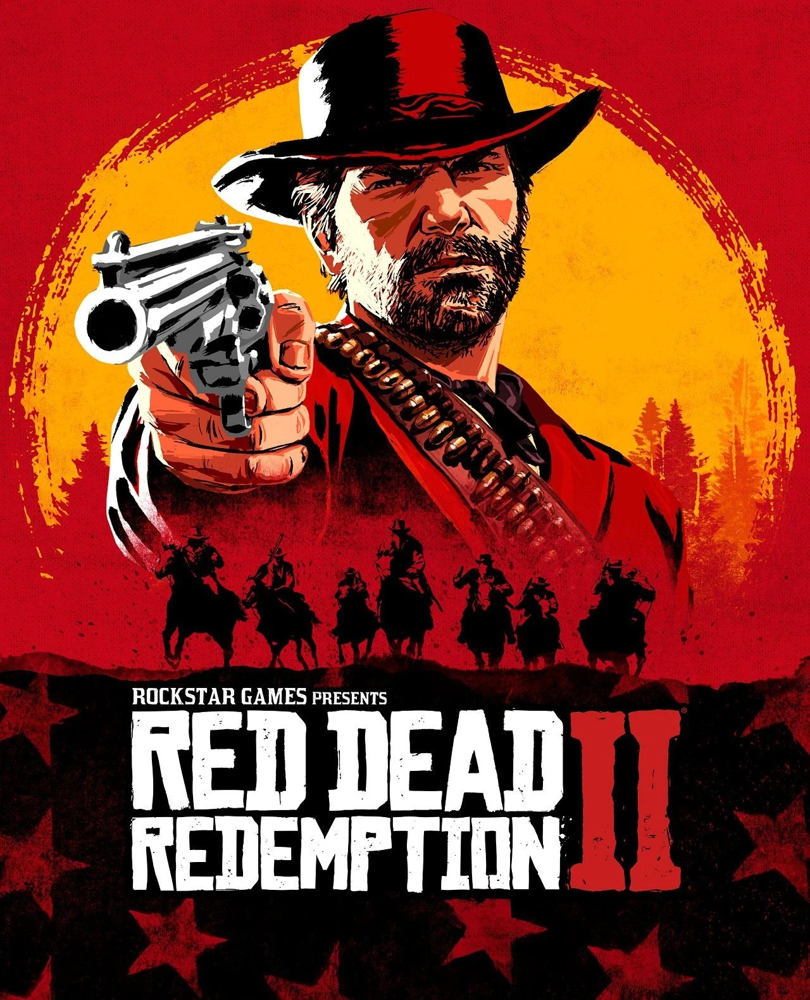
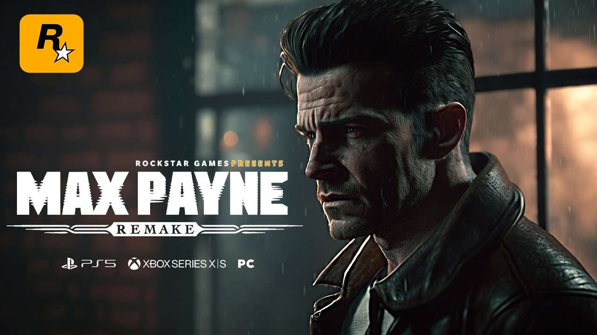

Search and filter - Click Learn More for history + official Rockstar link. Click images for lightbox.

2013 - Three protagonists, Los Santos. 200M+ copies.

2018 - Van der Linde gang final days, Arthur Morgan.

2001 noir classic - bullet-time returns 2025.
Living online world - heists, businesses, chaos since 2013.
2006 - Welcome to Bullworth Academy, Jimmy Hopkins rise.
2011 - 1947 Los Angeles glamour and crime, detective Cole Phelps.
Try search: GTA, Red Dead, Max, Bully, L.A.
Loading...